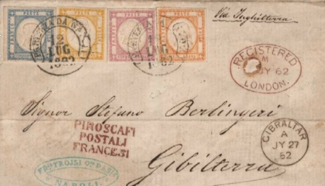

Genuine(?) Romagne stamps on a forged cover.
Dario Balbi
Note: on my website many of the
pictures can not be seen! They are of course present in the
catalogue;
contact me if you want to purchase the catalogue.
A stamp forger from Genoa, Italy, specialized in making forgeries of old Italian States (also on cover) around 1895. He also used the name Dario Balbi. Apparently he is most known for his forgeries of all issues of Parma and the 50 Baj and 1 Scudo of the Papal States (according to 'Philatelic Forgers, their Lives and Works' by V.E.Tyler).
I have not been able to get much information on which forgeries exactly he made, but I did find the following two forged covers by him from rpsl.org.uk/Portals/0/RPSL/Expert-Committee-Virtual-Stampex/index.html

Genuine(?) Romagne stamps on a forged cover.